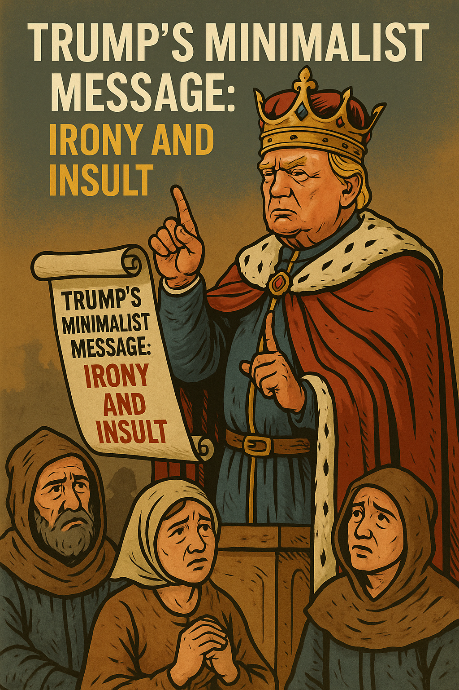

Written on: May 5, 2025
There's a profound irony in President Trump's recent message urging Americans toward minimalism. Historically, Trump's brand has been synonymous with excess and luxury—think gilded skyscrapers, lavish resorts, and even branded steaks. Adding to this irony is the fact that Trump himself is a billionaire, funded by and closely aligned with other billionaires, making his minimalist messaging seem even more incongruous—adding insult to injury for the American people.
It evokes the image of historic kings and lords dictating to their peasants what they should tolerate and accept.
Consider the administration's recent economic policies, particularly the introduction of sweeping tariffs and stringent trade restrictions. These policies have driven up prices and restricted access to many imported goods. The result? Americans are being nudged—whether intentionally or not—toward consuming less. This emerging “less is more” stance, paired with Trump's minimalistic rhetoric, is directed towards a populace that he has already harmed with higher prices, strained relationships abroad, and the likelihood of a weakened dollar.
In essence, Trump's call for minimalism, juxtaposed against his own opulent lifestyle and harmful economic policies, represents a troubling disconnect. This approach not only exacerbates existing economic challenges but also highlights a leadership increasingly detached from the realities faced by everyday Americans. Ultimately, the nation must confront whether this direction is sustainable or beneficial in the long term.